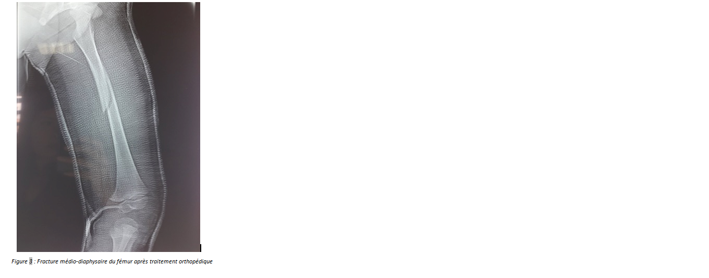
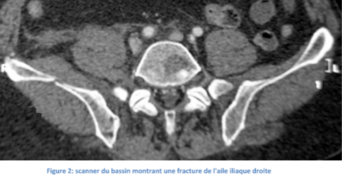
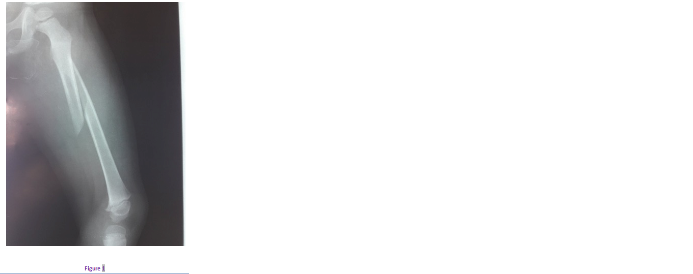
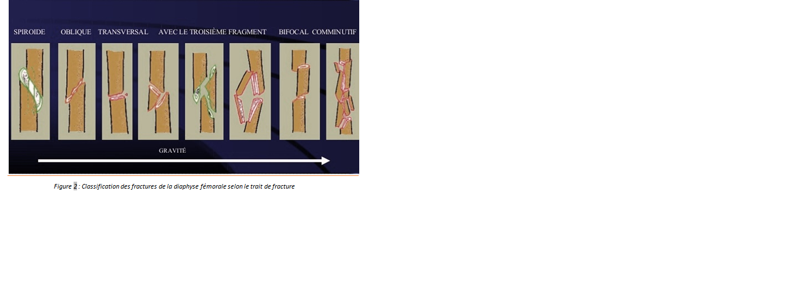

Cas clinique 8
Cuisse
Enfant de 4ans, qui s’était présenté aux urgences suite à un traumatisme du membre inférieur gauche causé par la chute d’un objet lourd sur sa cuisse.
L’examen avait noté une déformation en crosse de la cuisse gauche avec douleur à la palpation de la partie moyenne. Il n’y avait pas d’ouverture cutanée ni de troubles vasculo-nerveux.
Réponse :
-
Fracture médio-diaphysaire du fémur droit avec angulation.
Réponse :
Ouverture cutanée : allant de l’ouverture de dedans en dehors en cas de déplacement majeur jusqu’au délabrement avec perte de substance musculo-cutanée.
Lésions vasculaires et nerveuses à rechercher systématiquement.
Réponse :
C’est une indication au traitement orthopédique : réduction orthopédique puis immobilisation par plâtre pelvipedieux.
Réponse :
On demande un scanner du bassin (figure 2)

Réponse :
- Inégalité de longueur des membres inférieurs.
- -Cal vicieux .
- -Pseudarthrose.
Commentaire 1
-
Les fractures diaphysaires du fémur représentent la troisième localisation par ordre de fréquence des fractures de l’enfant. Elles sont très variables avec classiquement une fracture médio-diaphysaire.
Elles sont rencontrées principalement chez le garçon (sex ratio : 3/1)
Les étiologies sont nombreuses et variables selon l’âge du patient :
- Entre 0-4 ans : chutes 40%, maltraitance 30%, accident de la voie publique 10%, traumatisme obstétricaux rares.
- Entre 6-10 ans : Accident de la voie publique 70%, chute 20%.
- Entre 13 et 15ans : Accident de la voie publique 70%, accident de sport 20%.
Commentaire :
-
CONDUITE À TENIR EN URGENCE :
- -Chercher lésions associés et surveillance des constantes vitales.
- -Pose d’une voie veineuse permettant l’administration d’antalgiques.
- -Réalisation d’une anesthésie locorégionale de type bloc crural : elle peut être effectuée avant toute autre investigation dès que le diagnostic de fracture du fémur est évoqué. Elle permettra la manipulation et l’installation indolore de l’enfant.
Commentaire 3
Le traitement orthopédique s’impose chez le petit enfant avant 6 ans car le potentiel de remodelage est important et la consolidation est rapide. Les modalités du traitement orthopédique sont variées, dépendant de l’âge de l’enfant, du type de fracture, et surtout des habitudes du chirurgien qui applique et surveille ce traitement, qui est représenté essentiellement par la traction et l’immobilisation plâtrée d’emblée ou après réduction.
- -Réduction de la fracture puis immobilisation plâtrée :
Elle se réalise sur un cheval à plâtre et nécessite plusieurs aides qui maintiennent l'alignement du membre (ligne passant par l'épine iliaque antéro-supérieure, le bord externe de la rotule, le premier espace interdigital du pied), le genou en légère flexion (15°) et le talon à angle droit. Commencer par une attelle plâtrée postérieure qui renforcera la solidité du plâtre. Ne pas oublier de protéger les plis et les saillies osseuses par du coton. Renforcer au niveau de l'articulation de la hanche par de petites attelles (abaisse-langues, par exemple). Le plâtre doit englober les deux épines iliaques antéro-supérieures, s'appuyer sur le sacrum, dégager l'orifice anal et le périnée. Les orteils sont bien dégagés pour permettre une bonne surveillance du plâtre.
- - La traction collée au zénith
C’est un système adhésif, fait d’une large bande de sparadrap, appliqué en U sur les faces interne et externe du membre inférieur, à partir du genou. Sous le pied une planchette est disposée maintenant la bande écartée. Une cordelette de traction y est amarrée. Un système de deux poulies fixées sur un cadre surmontant le lit permet de réaliser une traction convenable dans sa force et sa direction. Le membre est soulevé à la verticale par un poids équivalent au 10ème du poids du corps de l'enfant qui doit soulever la fesse au-dessus du plan de décubitus
Des contrôles radiologiques vérifient la qualité de l’alignement. Dès l’apparition du cal sur la radio, la traction est remplacée par un plâtre pelvi-pedieux. L’inconvénient majeur de ces méthodes est de nécessiter une hospitalisation prolongée et une longue éviction scolaire.
Commentaire 4
- Inégalité de longueur des membres inférieurs : surtout si on laisse un chevauchement important ou en cas de réduction parfaite chez le petit enfant (risque d’hypercroissance)
- Cal vicieux : c’est l’apanage du traitement orthopédique.
Les cals vicieux en varus ou en valgus seront d’autant plus tolérés que l’enfant est jeune et donc le potentiel de remodelage résiduel important.
Les cals vicieux rotatoires ne se corrigent pas et doivent donc être soigneusement évités par une correction parfaite de la rotation dans le foyer de fracture.
- Pseudarthrose : rare
Figure 1

Pour approfondir :
-
Ces fractures ne nécessitent pas de classification particulière.
Il faudra bien préciser l’âge de l’enfant, le siège de la fracture (1/3 supérieur, moyen ou inférieur), le type de trait de la fracture, le nombre de fragments et d’éventuelles complications associées.

Références
- BERARD.
Les fractures de fémur de l’enfant
In conférences d’enseignement de la SOFCOT
Ortho-pédiatrie 4-page : 51-68 ;1996
- P.METAISEAU.
Fractures de la diaphyse fémorale chez l’enfant
Encyclo Med Chir 14-078-B-10
- Oudrhiri Ouafae.
Traitement orthopédique des fractures de la diaphyse fémorale chez l’enfant (à propos de 184 cas) Thèse de médecine.num 242,1986 Rabat
- Babioui Alaoui Ikram
Les fractures de la cheville chez l’enfant
Thèse de médecine num 123,2008 Fès
- O.ANGLEN ;L.CHOL
Treatment Option in Pediatric Femoral Shaft Fractures
J Orthop Trauma 2005;19;724-33
- E.HEYWORTH;G.J.GALANO;M.A.VITALE;M.G.VITALE.
Management of Closed Femoral Shaft Fractures in Children,age 6 to 10
J Pediatr Orthop 2006;26:497-504
- Berne, P. Mary, J.-P. Damsin, G. Filipe
Fracture de la diaphyse fémorale de l'enfant : traitement par plâtre pelvi-pédieux d'emblée Revue de chirurgie orthopédique 2003 ; 89, 599-604.
- T.EREN ; M.KUCUKKAYA ;C.KOCKESEN ;Y.KABUKCUOGLU ;U.KUZGUN
Open Reduction and Plate Fixation of Femoral Shaft Fractures in Children Aged 4 to 10 Journal of Pediatric Orthopardics 2003;23:190-3.